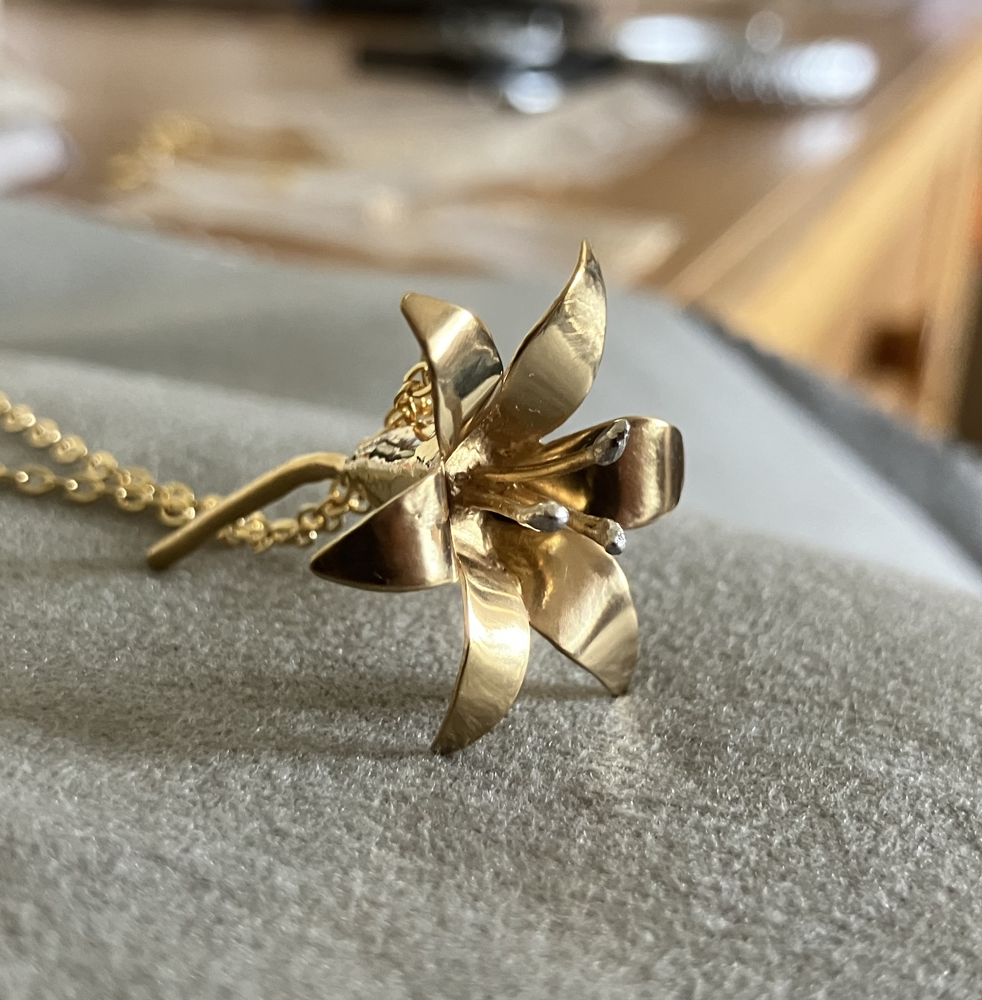
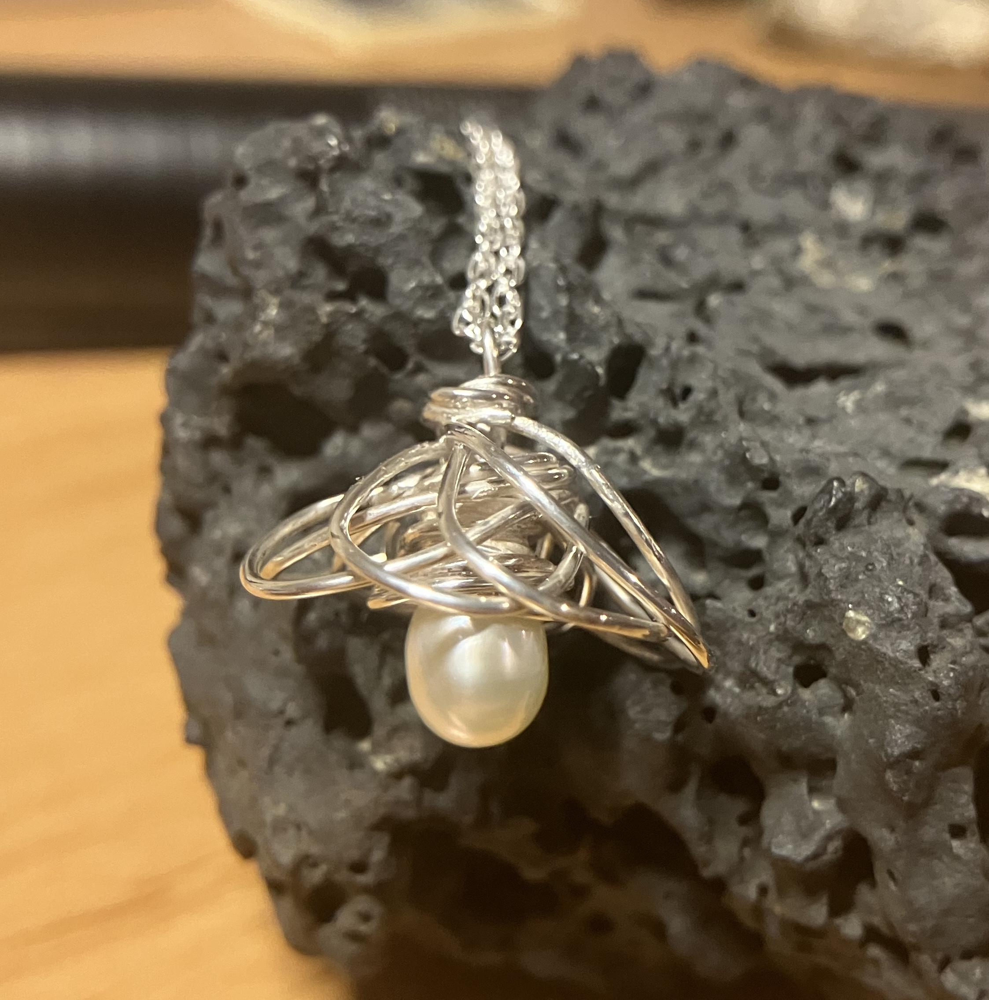
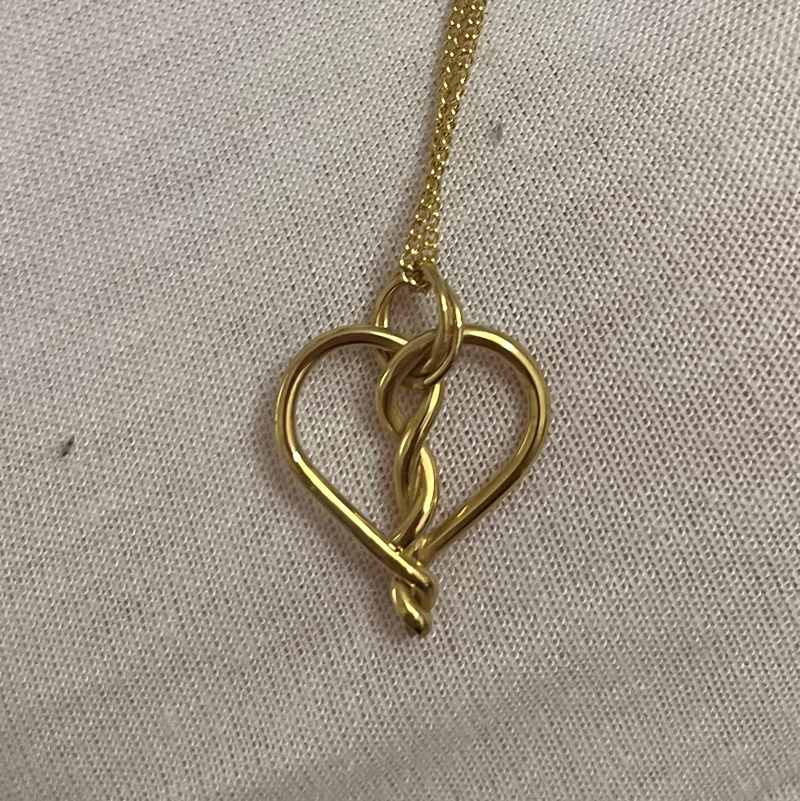
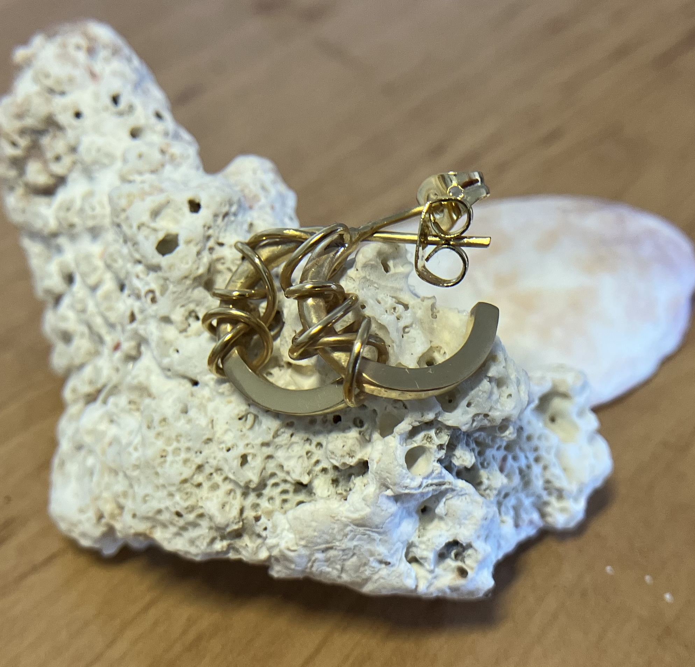
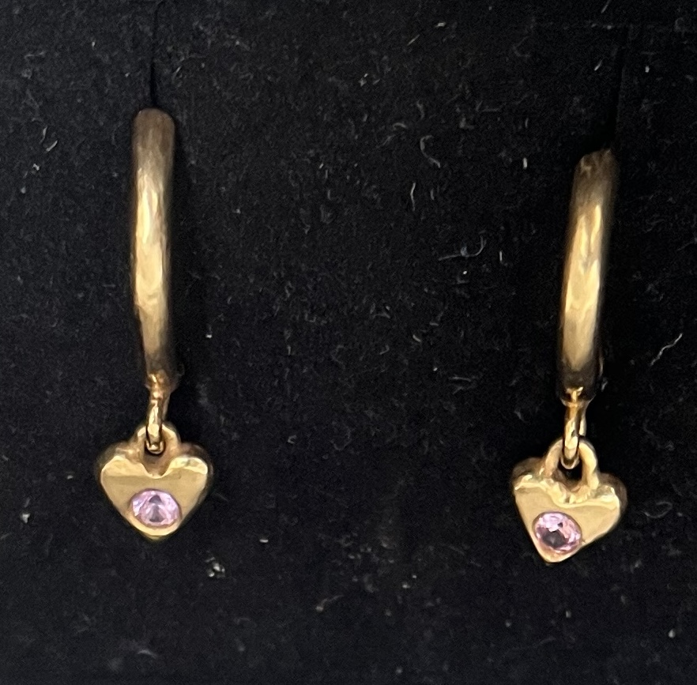
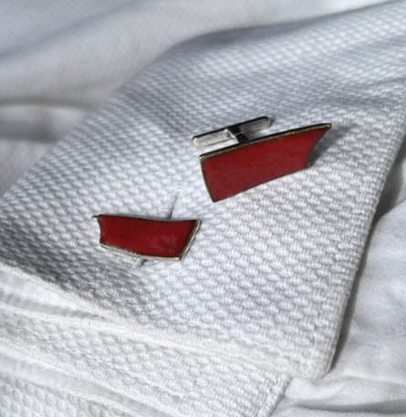
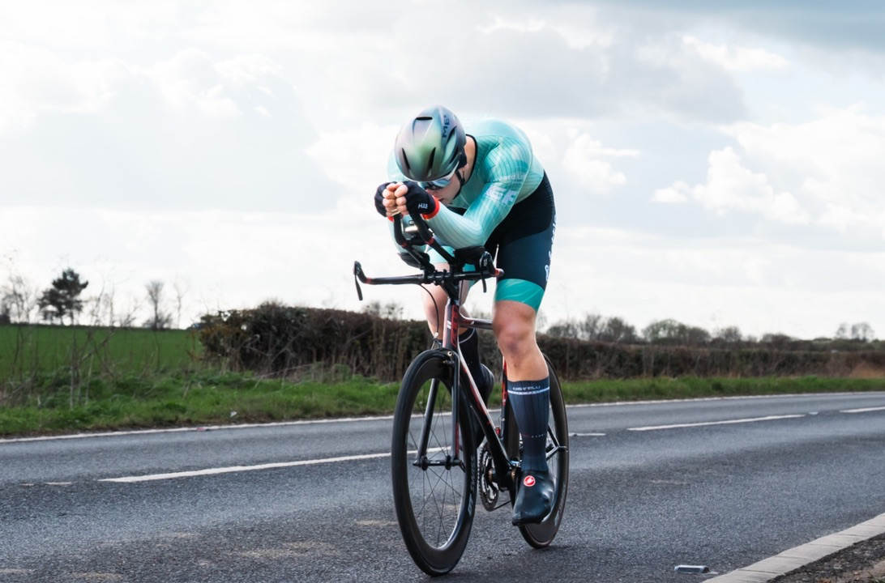
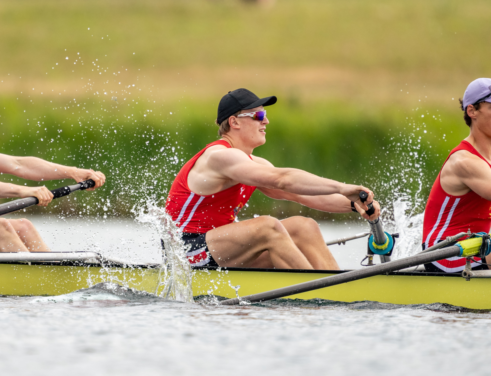
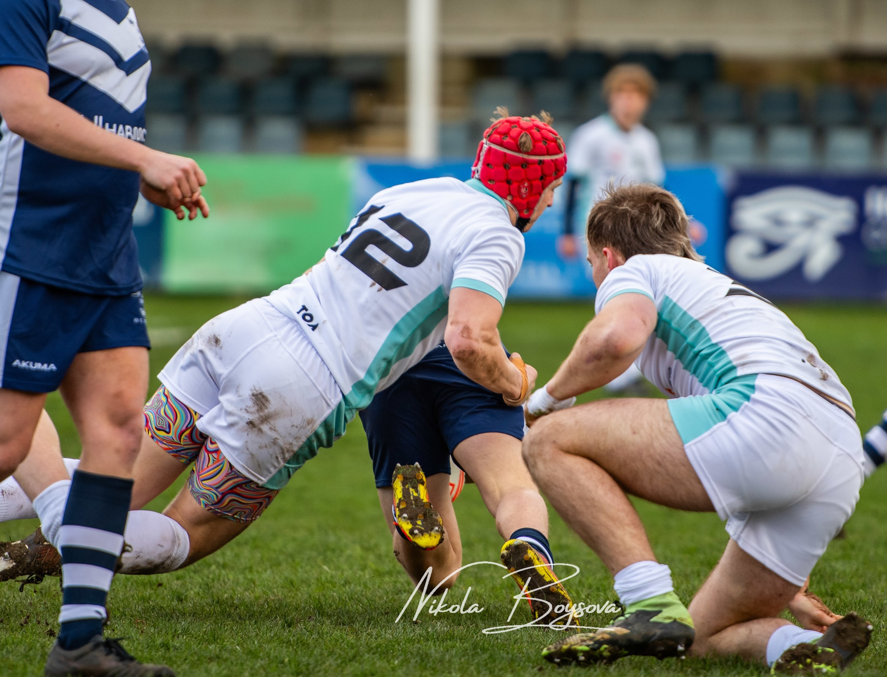

Hello, I'm
I'm a PhD candidate using modelling to study the ocean carbon cycle at DAMTP, University of Cambridge.
Research
My work has been a mix of different topic. I spend a lot of time developing tools to facilitate faster and more flexible modelling of ocean biogeochemistry. We developed OceanBioME.jl with the hope of making it easier to use models which typically are wrapped up in large code bases following the design philosophy behind Oceananigans.jl where you build models in scripts and only change the bits you need. The hopefully means that its also easy to prototype and iterate new parameterisations and model components. This is particularly useful for mCDR where novel components are needed to represent interventions
I also study giant kelp forests. I have developed a model of giant kelp which includes the phyics (kelp movement and drag on the water), the kelps growth, and interaction with the rest of the biogeochemical system. I am using this model to try to better understand how giant kelp forests store carbon, and how they effect the ecosystem around them.
Selected publications
Software
Ocean Biogeochemical Modelling Enviroment is a Julia package designed to be fast and flexible. It builds on Oceananigans.jl to provide modular biogeochemical models which are (hopefully) straight forward to use and modify.
Biogeochemistry
Physics
Walrus (closure -> seal -> seal 🦭 -> walrus) is a package providing various closures for Oceananigans simulations such as surface radiation and momentum exchange, wall stress parameterisaitons, and tidal forcing. Note
I developed this for near field LES applications at the same time that NumericalEarth was developing their coupling, I would highly reccomend their version for most applications.
Model closures
Others
Contact
Please get in touch!
Other interests







Cycling
Rowing
Rugby